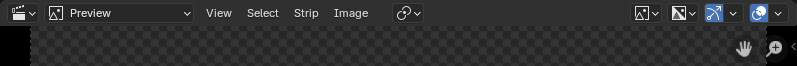

Header¶

Header ở chế độ Preview.¶
View Menu¶
- Toolbar T
Hiện hoặc ẩn Toolbar.
- Sidebar N
Hiện hoặc ẩn Sidebar.
- Tool Settings
Hiện hoặc ẩn các cài đặt cho công cụ đang được chọn.
- Footer
Hiện hoặc ẩn Sidebar.
- Scrubbing Region
Hiển thị một vùng riêng bên dưới preview để scrub (kéo tua) qua toàn bộ khoảng phát lại mà không làm thay đổi mức zoom hiện tại của timeline.
Giống như các vùng khác của editor, Scrubbing Region có thể bị ẩn bằng cách kéo biên của nó về phía rìa editor.
- Preview During Transform
Hiển thị xem trước frame đầu hoặc frame cuối của một strip trong khi biến đổi handle tương ứng của nó.
- Refresh All (làm mới tất cả)
Tải lại các file ngoài và làm mới phần xem trước của frame hiện tại. Điều này hữu ích khi bạn đã sửa một file ngoài hoặc thay đổi gì đó trong scene mà Blender không nhận diện được.
- Frame Selected
Pan và zoom khung nhìn để tập trung vào ảnh được chọn.
- Fit Preview in Window Home
Pan và zoom khung nhìn sao cho toàn bộ video đều nhìn thấy được. Thao tác này bật Zoom to Fit.
- Zoom
Menu chứa các mức zoom và thao tác tiện dụng. Các mức zoom được tính dựa trên độ phân giải của ảnh so với độ phân giải màn hình.
12.5% (1:8) Numpad8 thu nhỏ về mức 12.5%.
25% (1:4) Numpad4 thu nhỏ về mức 25%.
50% (1:2) Numpad2 thu nhỏ về mức 50%.
100% (1:1) Numpad1 đặt lại mức zoom về 100%.
200% (2:1) Ctrl-Numpad2 phóng to lên mức 200%.
400% (4:1) Ctrl-Numpad4 phóng to lên mức 400%.
800% (8:1) Ctrl-Numpad8 phóng to lên mức 800%.
- Zoom In/Out Wheel
Phóng to hoặc thu nhỏ khung nhìn.
- Zoom to Fit Shift-Home
Giống Frame All, nhưng tận dụng tối đa không gian sẵn có trong editor.
- Zoom Region Shift-B
Phóng to khung nhìn đến phần tử gần nhất nằm trong khung viền.
- Auto Zoom
Chừng nào tùy chọn này còn bật, preview sẽ tự động zoom để giữ kích thước video đồng bộ với kích thước editor.
- Proxy
Xem Proxy.
- Use Timecode Ctrl-T
Hiển thị giây thay vì frame trên trục thời gian.
- Sequence Render Image
Hiển thị phần xem trước của frame hiện tại dưới dạng Render Result, nơi bạn có thể lưu nó thành một file ảnh.
- Sequence Render Animation
Lưu phần xem trước của các frame trong khoảng scene (hoặc khoảng preview, nếu đang bật) vào một file video hoặc một chuỗi file ảnh. Xem panel Output để biết chi tiết.
Ghi chú
Sequence Render Image và Sequence Render Animation mặc định không render video cuối cùng -- cụ thể là chúng không render Scene Strip, mà dùng chế độ shading của preview (ban đầu là Solid).
Để xuất một video mà Scene Strip được render, hãy dùng menu Render trên thanh menu trên cùng, hoặc đổi Sidebar ‣ View ‣ Scene Strip Display ‣ Shading thành Rendered.
- Export Subtitles (xuất phụ đề)
Xuất các Text strip (có thể đóng vai trò phụ đề) ra một file SubRip (
.srt). File xuất ra chứa tất cả Text strip trong chuỗi video.
- Toggle Sequencer/Preview Ctrl-Tab
Chuyển chế độ editor giữa Sequencer và Preview.
- Area
Các điều khiển của area. Xem tài liệu user interface để biết thêm thông tin.
Select Menu¶
Xem Chọn strip.
Menu Strip¶
Xem Chỉnh sửa strip để biết thêm thông tin.
- Mirror
- Interactive Mirror Ctrl-M
Bắt đầu thao tác mirror dựa trên vị trí con trỏ chuột
- X Global
Lật ngược ảnh theo tọa độ X toàn cục
- Y Global
Lật ngược ảnh theo tọa độ Y toàn cục
- X Local
Lật ngược ảnh theo tọa độ X cục bộ
- Y Local
Lật ngược ảnh theo tọa độ Y cục bộ
- Duplicate Shift-D
Operator Duplicate tạo một bản sao của (các) strip được chọn và đặt chúng vào channel trống gần nhất phía trên bản gốc.
Nội dung đã duplicate vẫn giữ trạng thái được chọn, cho phép định vị lại ngay lập tức.
Xem thêm
- Copy Ctrl-C
Thêm các strip được chọn vào buffer copy-paste.
- Paste Ctrl-V
Dán các strip từ buffer copy-paste.
- Animation
- Insert Keyframe I
Xem Insert Keyframe.
- Insert Keyframe with Keying Set K
- Change Keying Set Shift-K
- Delete Keyframes Alt-I
Xem Delete Keyframes.
- Clear Keyframes Shift-Alt-I
Xem Clear Keyframes.
Xem thêm
- Show/Hide
- Show Hidden Strips Alt-H
Hiện lại tất cả các strip bị ẩn/tắt tiếng.
- Hide Selected H
Tắt tiếng các strip được chọn.
- Hide Unselected Shift-H
Tắt tiếng tất cả strip trừ những strip đang được chọn.
- Delete
Xóa các strip được chọn
Menu Image¶
- Transform
- Move Origin Ctrl-Period
Di chuyển gốc tọa độ (origin) của image strip mà không thay đổi vị trí nội dung của strip.
Điều này hữu ích để điều chỉnh điểm tham chiếu cho các phép biến đổi như xoay, scale, hay định vị tiếp theo. Ví dụ, di chuyển origin đến một góc của ảnh cho phép phép xoay quay quanh góc đó, thay vì quanh tâm mặc định.
- Clear
Đặt lại vị trí, góc xoay hoặc tỷ lệ của các ảnh được chọn.
- Apply
- Scale to Fit
Thay đổi kích thước các ảnh được chọn sao cho chúng lớn nhất có thể mà vẫn nằm trọn trong video. Chúng không bị cắt, và tỷ lệ khung hình được giữ nguyên.
- Scale to Fill
Thay đổi kích thước các ảnh được chọn sao cho chúng lấp đầy toàn bộ không gian video. Chúng có thể bị cắt, nhưng tỷ lệ khung hình được giữ nguyên.
- Stretch to Fill
Thay đổi kích thước các ảnh được chọn sao cho khớp với kích thước video. Chúng không bị cắt, nhưng tỷ lệ khung hình có thể thay đổi.
Pivot Point¶
Xem Pivot Point.
Display Mode¶
Xem Display Mode.
Display Channels¶
- Color & Alpha
Hiển thị ảnh xem trước với độ trong suốt trên nền hoa văn caro.
- Color
Bỏ qua độ trong suốt của ảnh xem trước (các vùng trong suốt hoàn toàn sẽ màu đen).
Gizmos¶
Xem Gizmos.